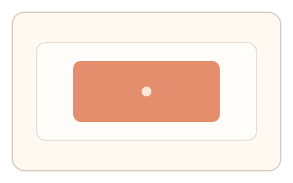
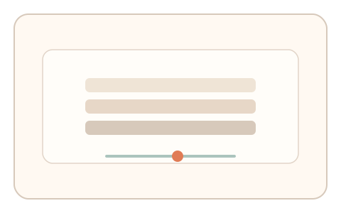
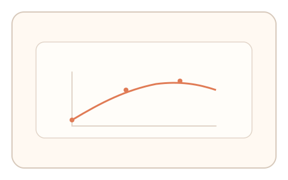

#124
D：单底座 × 单信号 × 自适应/短序列（视觉时域）
已扩展
色彩回弹阶梯
颜色适应后进行多轮灰阶校准，记录回弹曲线与稳定时间作为特征。
概念原文
颜色适应后进入 2–3 轮灰阶中性校准，记录回弹曲线与稳定时间，并与个体历史基线比对。
使用个人色彩适应轨迹作为生理签名。
研究背景
色彩适应会引起中性点偏移与回弹，恢复时间常数具有个体差异。通过多轮校准可获取稳定的色彩回弹轨迹。
核心机制
- 短时呈现高饱和颜色进行适应。
- 进入灰阶/中性校准并记录中性点。
- 重复 2–3 轮形成回弹曲线。
- 与个人基线或群体分布比对。
用户流程
- 步骤 1：用户观看饱和色适应屏。
- 步骤 2：在灰阶中调整到“刚好中性”。
- 步骤 3：重复数轮并记录回弹曲线。
判定信号
中性点回弹曲线
回弹斜率与拐点反映适应恢复特征。
稳定时间与波动幅度
人类会出现轻微波动与趋稳过程。
判定逻辑
回弹曲线与稳定时间需落在基线区间；过快收敛或无波动判异常。
对抗面
- 脚本固定设置中性点
- 重放历史校准轨迹
防御与缓解
- 随机化适应色相/强度与时长
- 打乱灰阶阶梯顺序
- 加入短暂空白降低记忆重放
可达性与风险
提供低饱和版本与色觉障碍替代任务。
- 环境光变化影响色彩判断
- 色弱用户可能误判
可视化状态

状态 1：颜色适应
高饱和色块形成适应。

状态 2：灰阶校准
在阶梯灰阶中调到中性。

状态 3：回弹曲线
记录中性点回弹与稳定时间。
参考资料
Chromatic adaptation
说明色彩适应与中性点偏移。
Afterimage
说明适应后的回弹与残像。